A team can have up to 12 players with coaching and medical staff.
Everyone must wear the same jerseys with no distractions or variations in design (except the libero who can wear a jersey varying in color).
6 players must be on the court per team in play.
Positions:
The three players along the net are front-row players. They occupy positions 4 (front-left), 3 (front-center) and 2 (front-right).
The three players along the back row are back-row players. They occupy positions 5 (back-left), 6 (back-center), and 1 (back right).
When the receiving team has gained the right to serve,
its players rotate one position clockwise: the player in position 2 rotates to position 1 to serve, the player in position 1 rotates to position 6, etc.
The positions of players are determined and controlled
according to the positions of their feet contacting the ground (the last contact with the floor fixes the player’s position), as follows:
each back-row player must be level with or have at least a part of one foot further from the centerline than the front foot of the corresponding front-row player;
After the service hit, the players may move around and occupy any position on their court and the free zone.
The team commits a positional fault if any player is not in his/her correct position at the moment the ball is hit by the server.
If the server commits a serving fault at the moment of the service hit, the server's fault is counted before a positional fault.

Liberos
Each team has the right to designate from the list of players on the score sheet up to two specialist defensive players: Liberos.
Only one Libero may be on the court at any time.
The Libero player(s) must wear a uniform that has a different dominant color from any color of the rest of the team.
The playing actions:
The Libero is allowed to replace any player in a back-row position.
He/she is restricted to performing as a back-row player and is not allowed to complete an attack hit from anywhere
(including playing court and free zone) if at the moment of the contact the ball is entirely higher than the top of the net.
He/she may not serve, block or attempt to block.
A player may not complete an attack hit when the ball is entirely higher than the top of the net if the ball is coming from an overhand finger pass by a Libero in
his/her front zone. The ball may be freely attacked if the Libero makes the same action from outside his/her front zone.